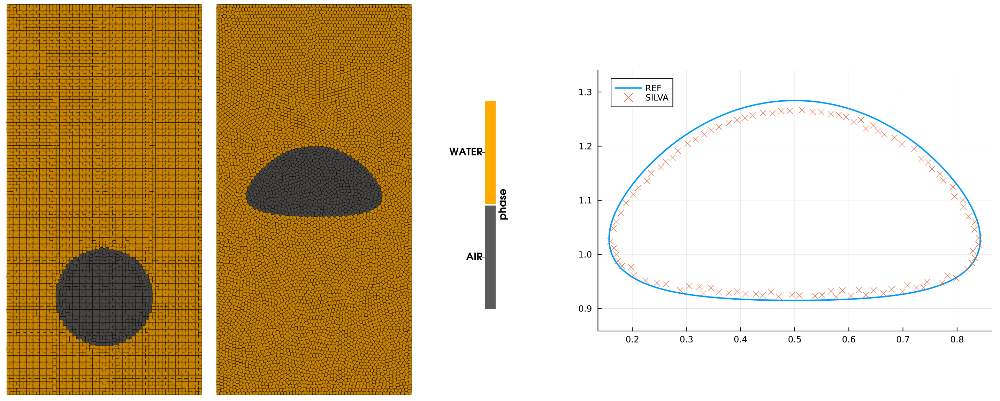

Example 12: Rising bubble
An air bubble rising due to buoyancy. Outputs of the simulation are
- bubble center of mass (y-coordinate)
- the rising speed
- the shape at $t=3$
The result is compared to a reference solution. Find details in this excellent overview.
module bubble
include("../src/LagrangianVoronoi.jl")
using .LagrangianVoronoi
using StaticArrays
using Plots
using Parameters
using Base.Threads
using WriteVTK
using LinearAlgebra
using Polyester
using LaTeXStrings, CSV, DataFrames
const R = 0.25
const Rho = 1000.0
const rho = 100.0
const Mu = 10.0
const mu = 1.0
const dr = R/15
const v_char = 1.25
const dt = 0.1*dr/v_char
const t_end = 3.0
const nframes = 100
const g = 0.98
const st = 24.5
const smoothing_length = 3dr
const export_path = "results/bubble"
const xlims = (0.0, 1.0)
const ylims = (0.0, 2.0)
const WATER = 0
const AIR = 1
function ic!(p::VoronoiPolygon)
p.c2 = Inf
r = sqrt((p.x[1]-0.5)^2 + (p.x[2]-0.5)^2)
p.phase = (r < R) ? AIR : WATER
p.rho = (p.phase == WATER ? Rho : rho)
p.mu = (p.phase == WATER ? Mu : mu)
p.mass = p.rho*area(p)
p.v = VEC0
p.st = st
end
mutable struct Simulation <: SimulationWorkspace
grid::GridMulti
solver::PressureSolver{PolygonMulti}
viscous_solver::ViscousSolver{PolygonMulti}
bubble_y::Float64 # y-coordinate of the bubble centroid
bubble_vy::Float64 # bubble rising speed
Simulation() = begin
domain = Rectangle(xlims = xlims, ylims = ylims)
grid = GridMulti(domain, dr)
populate_rect!(grid, ic! = ic!)
solver = PressureSolver(grid)
viscous_solver = ViscousSolver(grid)
return new(grid, solver, viscous_solver, 0.0, 0.0)
end
end
function top_and_bottom(x::RealVector)::Bool
return isapprox(x[2], ylims[1]) || isapprox(x[2], ylims[2])
end
function vDirichlet(_::RealVector)::RealVector
return VEC0
end
function step!(sim::Simulation, t::Float64)
move!(sim.grid, dt)
find_rho!(sim.grid)
viscous_step!(sim.viscous_solver, dt)
bdary_friction!(sim.grid, vDirichlet, dt, charfun=top_and_bottom)
gravity_step!(sim.grid, -g*VECY, dt)
surface_tension!(sim.grid, dt, smoothing_length)
find_pressure!(sim.solver, dt)
pressure_step!(sim.grid, dt)
phase_preserving_remapping!(sim.grid, dt, smoothing_length)
end
function postproc!(sim::Simulation, t::Float64)
sim.bubble_y = 0.0
sim.bubble_vy = 0.0
bubble_area = 0.0
for p in sim.grid.polygons
if p.phase != AIR continue end
A = area(p)
bubble_area += A
sim.bubble_y += A*p.x[2]
sim.bubble_vy += A*p.v[2]
end
sim.bubble_y /= bubble_area
sim.bubble_vy /= bubble_area
@show t
println("y = $(sim.bubble_y)")
println("v = $(sim.bubble_vy)")
println()
end
function main()
sim = Simulation()
run!(sim, dt, t_end, step!;
path = export_path,
postproc! = postproc!,
vtp_vars = (:v, :P, :rho, :phase),
nframes = nframes,
save_points = true,
save_csv = true,
csv_vars = (:bubble_y, :bubble_vy)
)
export_shape(sim.grid)
make_plots()
end
function export_shape(grid::VoronoiGrid)
path = joinpath(export_path, "shape.csv")
x = Float64[]
y = Float64[]
for p in grid.polygons
if p.phase != AIR continue end
if !isinterface(p, grid) continue end
push!(x, p.x[1])
push!(y, p.x[2])
end
shape_data = DataFrame(x = x, y = y)
CSV.write(path, shape_data)
end
function make_plots()shape-comparison graph
shape = CSV.read(joinpath(export_path, "shape.csv"), DataFrame)
shape_ref = CSV.read("reference/bubble_shape.csv", DataFrame)
plt = plot(shape_ref.x, shape_ref.y, axis_ratio = 1, label = "REF", linewidth=2)
scatter!(plt, shape.x, shape.y, markershape = :xcross, markersize = 4, label = "SILVA")
savefig(plt, joinpath(export_path, "shape.pdf"))
quantities = CSV.read(joinpath(export_path, "simdata.csv"), DataFrame)
quantities_ref = CSV.read("reference/bubble_quantities.csv", DataFrame)center of mass plot
plt = plot(quantities.time, quantities.bubble_y, label = "SILVA", xlabel = L"t", ylabel = L"y", linewidth=2)
plot!(plt, quantities_ref.t, quantities_ref.y, label = "REF", linewidth = 2)
savefig(plt, joinpath(export_path, "bubble_y.pdf"))rise speed plot
plt = plot(quantities.time, quantities.bubble_vy, label = "SILVA", xlabel = L"t", ylabel = L"v_y", linewidth=2)
plot!(plt, quantities_ref.t, quantities_ref.vy, label = "REF", linewidth = 2)
savefig(plt, joinpath(export_path, "bubble_vy.pdf"))
end
endThis page was generated using Literate.jl.